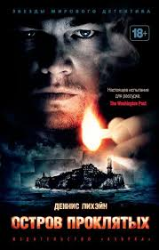

FILMS.UA - У нас завжди ви знайдете щось цікавеньке
Острів Проклятих (2010)

- Гасло: «Someone is missing»
- Рік: 2010
- Жанр: Фільм, Трилер, Детектив
- Країна: США
- Режисер: Мартін Скорсезе
- Актори:Леонардо Ді Капріо, Марк Руффало, Бен Кінгслі, Макс фон Сюдов, Мішель Вільямс, Емілі Мортімер, Патріція Кларксон, Джекі Ерл Гейлі, Тед Левайн, Еліас Котеас
- Одного разу два виконавця судових покарань приїжджають на один віддалений острів, розташований в штаті Массачусетс, щоб з'ясувати обставини зникнення підопічної лікарні для божевільних злочинців. Жінка, вбивця власних дітей, незрозумілим чином зникла із замкненої палати. В процесі розслідування чоловіки розплутують справжній клубок брехні, потрапляють в сильний ураган і стикаються з небезпечним бунтом пацієнтів лікувального закладу, але на цьому все не закінчується...